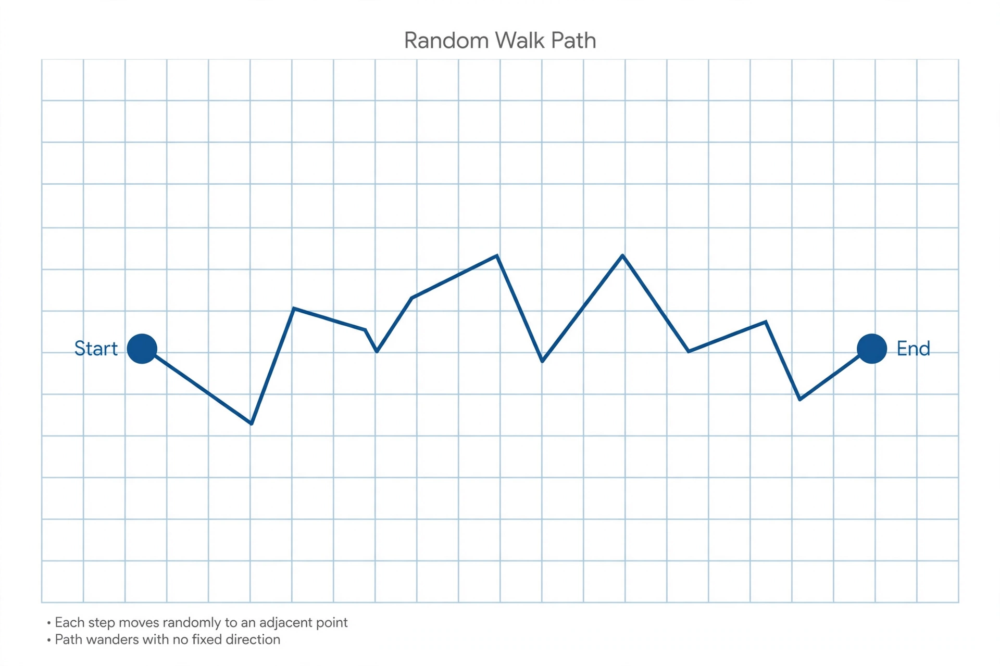

Random walk

[Image: A jagged random walk drifting across graph paper in random steps]
A random walk is a stochastic process describing a path of successive random steps — the wandering of a drunkard in the classic image, or, more seriously, the trajectory of a molecule buffeted by collisions. Karl Pearson coined the term in a 1905 letter to Nature, asking for the distribution of a walker taking unit steps in random directions.
After many steps a simple random walk is typically about √n steps from its start — diffusion distance — and in one and two dimensions it returns to its starting point with probability 1, while in three dimensions it may wander off forever (Pólya's theorem, 1921).
Applications
Random walks model stock-price movements (the random walk hypothesis of efficient markets), animal foraging, polymer shapes, and heat flow; the mathematics is the same as diffusion and Brownian motion.
Google's PageRank is a random walk on the web's link graph with occasional teleportation, run until the walker's distribution settles.